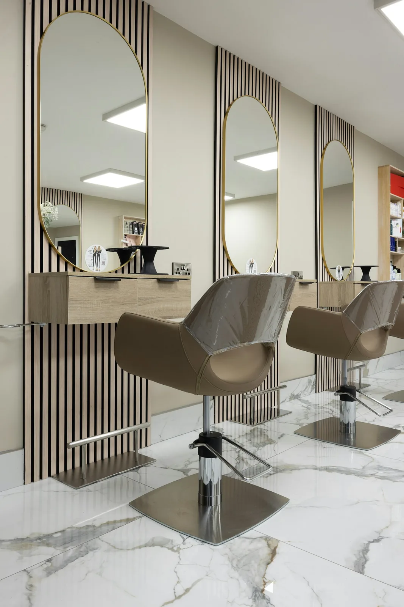
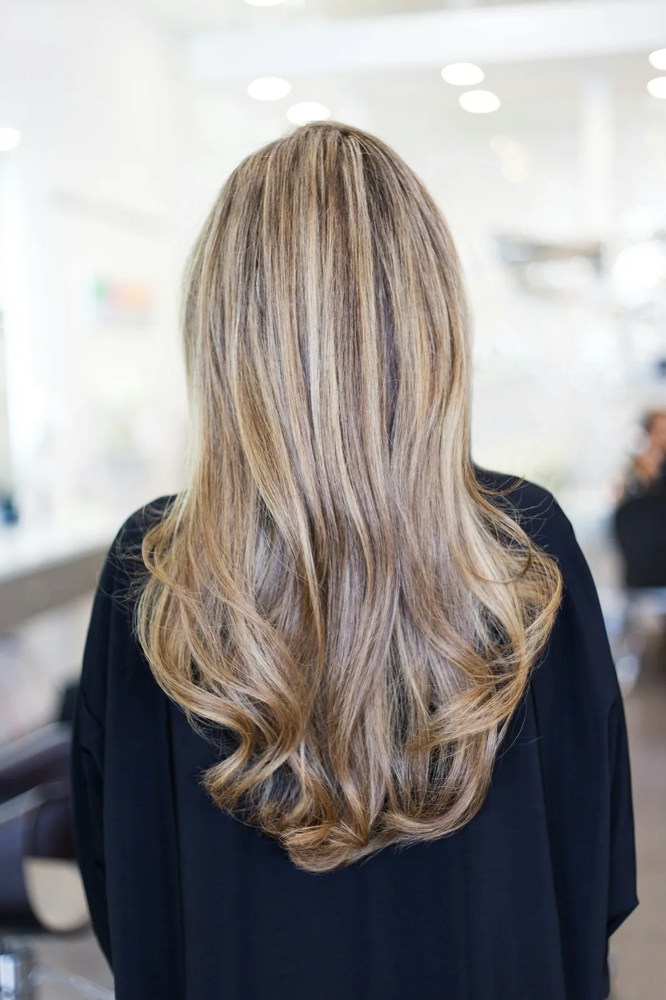
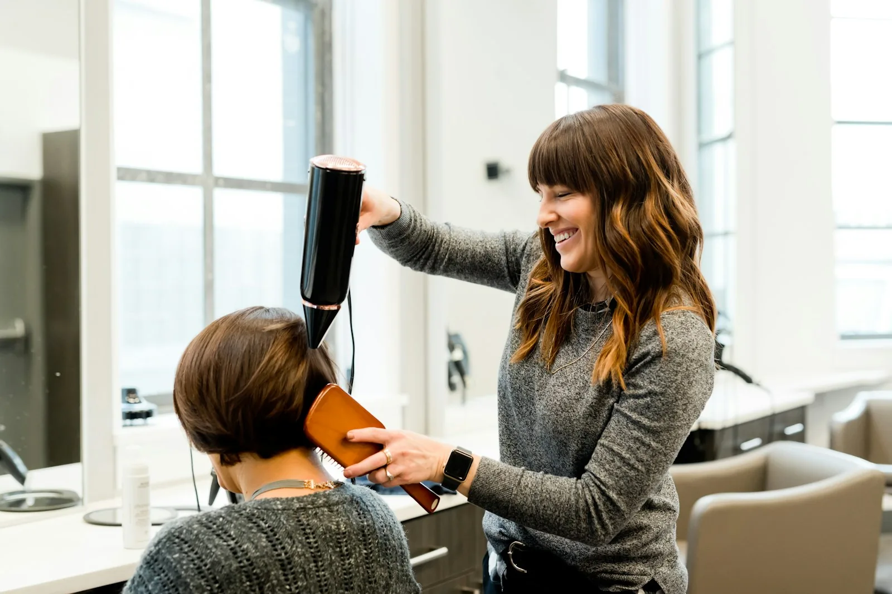
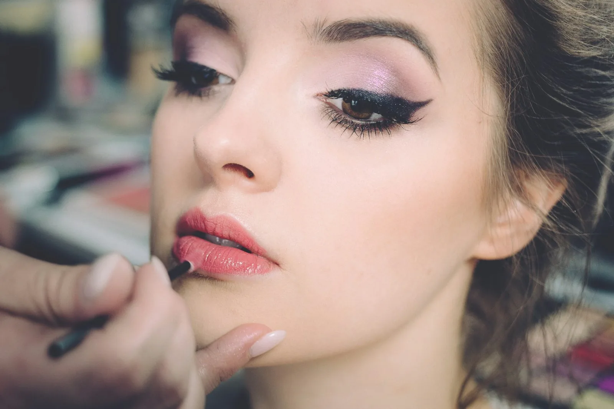

edição de outono · hair & beauty club
Beleza com assinatura.
Cor, corte e tratamento nos Jardins, com bistrô próprio e tempo de cadeira que você sabe antes de chegar.
Monte a sua tarde
Esta é a cadeira da casa, escaneada da nossa poltrona de 1920. Arraste para girar. A cada serviço marcado, ela vira para você.


